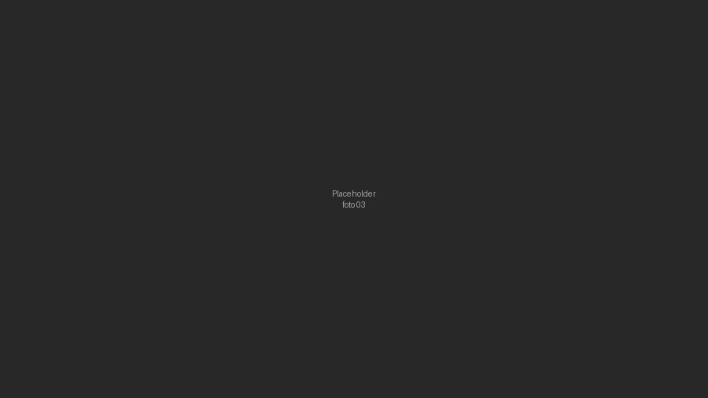
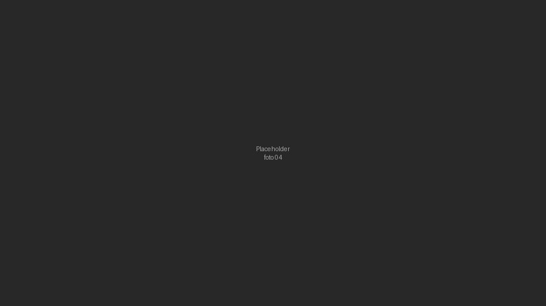

Press
-
Fértil expande su alcance hacia Centroamérica con una apuesta por nuevas producciones
La productora audiovisual apunta a aumentar su portafolio de producciones locales e internacionales, de la mano de nuevas alianzas estratégicas en países de Centroamérica. (Fuente: Gestión)
-
Fértil: la productora peruana que hizo del craft su sello para contar historias
En una industria donde la prisa suele imponerse sobre el proceso, Fértil construyó una identidad basada en lo contrario: el crafting, priorizando el detalle en cada etapa creativa. (Fuente: Ellas Internacional)
-
Fértil consolida su presencia en Latinoamérica con nuevas producciones internacionales
La productora especializada en contenido audiovisual de craft consolidó su crecimiento tras cerrar el año con una marcada expansión regional en Centroamérica. (Fuente: Revista Factor de Éxito)

-
Fértil: una productora nacida para una nueva generación de la industria audiovisual
Fundada por Tarek Kahhat y Matías Mendelevich, la productora ya contaba con varios proyectos en su portafolio a solo cinco meses de su llegada al mercado publicitario peruano. (Fuente: Mercado Negro)

-
Fértil: una trayectoria marcada por el crecimiento y la evolución constante
A siete meses de su fundación, Fértil se consolidó como una alternativa innovadora en el mercado, de la mano de directores cuyo trabajo se alineó con su visión. (Fuente: Mercado Negro)